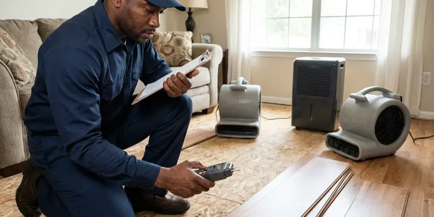

Plumbing Maintenance in Kingston, RI
JPN Plumbing flushes water heaters, tests valves and looks for hidden leaks across Kingston, RI so equipment lasts longer.
- Residential and Commercial Service
- Flexible Maintenance Visits
- Checklist-Based Visits
- Local Kingston Experts

Book a Whole-Home Plumbing Tune-Up in Kingston, RI
Ask about a yearly plan with reminders and priority scheduling.
Plumbing Tune-Ups That Catch Problems Early in Kingston, RI
JPN Plumbing runs yearly plumbing checkups that stretch the life of your water heater, valves and fixtures. Private wells serve many rural homes, and owners around Kingston benefit from testing for acidity, iron and other common concerns. A visit covers a tank flush, a relief valve test, a pressure reading and a look under each sink for slow drips. Minor repairs get done that day.
Some of what we do:
- Water heater flushing, anode checks and T&P valve testing
- Early spotting of leaks and slow drains
- Backflow testing, softener service and drain camera inspection

Additional Plumbing Maintenance Services in Kingston, RI
Our maintenance and specialty plumbing services in Kingston, RI protect your home year-round and extend the life of every system.


Customers
Why Choose JPN Plumbing for Plumbing Maintenance in Kingston, RI?
Our maintenance visits follow a written checklist. The report includes photos, plain notes and repair prices so you can prioritize. Every item gets checked.
- Longer Equipment Life, Flushed heaters, clean softeners and tested sump pumps last longer.
- Whole-Home Checklist, Supply lines, drains, fixtures, water heaters and safety devices get checked each visit.
- Catch It Early, Yearly checks find scale and small leaks while they are still cheap.
Citywide Coverage
Across Kingston and nearby towns, JPN Plumbing handles routine plumbing care. Downtown buildings, suburban homes and rural properties on wells all have their own maintenance needs, and our techs adjust the checklist for each one. Pressure tanks get tested.
Experienced Team
Our licensed plumbers have years on Rhode Island plumbing systems. They know local failure points, from seized valves to brand-specific heater issues. They know where to look.
Safety-First Approach
Repairs we recommend follow local plumbing and gas codes. We pull permits where they are required and use certified testers for backflow devices, so the paperwork holds up with the water utility and the building department. You get copies.
Trusted Certified Kingston Plumbing Services Professionals
At JPN Plumbing, we are proud to offer certified plumbing services throughout Kingston, RI. Those papers on the wall mean something. Our plumbers hold recognized industry credentials, and they follow strict safety and quality rules on every repair, installation and maintenance call we run.
Call Us Now PHCC Plumbing Contractor Recognition
PHCC Plumbing Contractor Recognition Better Business Bureau (BBB) Accreditation
Better Business Bureau (BBB) Accreditation Angi Certified Pro
Angi Certified Pro ISO 9001 Quality Management Certification
ISO 9001 Quality Management CertificationWhat a Plumbing Maintenance Visit Covers in Kingston, RI
Sewer and Drain Camera Inspection in Kingston, RI
A camera shows what the sewer looks like inside. Roots, sags, cracks and grease show up on camera, especially in old clay and cast iron. The recording is yours. We lay out options if something needs work.

Gas Connector and Shutoff Checks in Kingston
Gas feeds water heaters, furnaces, ranges and dryers. We inspect visible gas piping, test connections with leak detector solution, make sure each appliance shutoff valve turns and replace any old or kinked flexible connectors. Gas work is done to code. If you ever smell gas, leave the house and call your gas utility from outside.
Water Softener Service in Kingston
A softener only helps if it regenerates. Salt level, brine tank, injector and a test regeneration all get checked. We test the water afterward. A softener that quietly stopped working lets scale back into every pipe and appliance.
Commercial and Priority Maintenance in Kingston, RI
Restaurants, offices and apartments need plumbing that works every day. Scheduled service covers drains, heaters, backflow and restrooms, with priority emergency response for clients. Reports come every visit. Use them for planning.
Getting Ready for the Hard Months in Kingston, RI
Weak spots show up in bad weather. Shutting off outdoor spigots and insulating exposed lines are simple steps that protect homes around Kingston from burst pipes. During maintenance we look for exposed pipes in garages and crawl spaces, hose bibs without vacuum breakers and outdoor lines that need draining, and we fix those before the season that tests them. Insulation is cheap. Water damage costs plenty.
Scheduled Service for Businesses in Kingston
Commercial plumbing takes a beating. We service large water heaters, restroom fixtures, backflow preventers and kitchen drain lines on a set schedule, so failures are caught on a quiet Tuesday morning instead of a busy Friday night. Inspections go smoother. You get records for every visit.
Tank and Tankless Heater Tune-Ups in Kingston
Mineral-heavy water shortens water heater life. We drain sediment, check the anode rod, inspect the burner or elements and confirm the relief valve opens and reseats, whether the unit is a standard tank or a tankless model on the wall. Most failures give warning. A yearly tune-up catches the warning signs.

Hot Water Tank Service in Kingston, RI
Gas and electric tanks need different checks. On gas units we look at the burner flame, the flue draft and the gas connection for leaks, and on electric units we test the elements and the thermostats and check the wiring for heat damage. Sediment comes out either way. Mineral buildup on the bottom wastes fuel and can lead to early tank failure.
Local Plumbing Tune-Ups in Kingston, RI
A local maintenance team responds faster and knows the systems common here. We work here every day and understand how local water, weather and construction affect plumbing, and that knowledge goes into every inspection we do. You will see it in the notes.
Our maintenance plans fit your home or business. We send a reminder when service is due, keep records of every past visit and can tell you exactly when the water heater was last flushed or the backflow device last tested. No need to remember.
JPN Plumbing at a Glance
- Fully licensed plumbing team covering Kingston, RI
- 24/7 emergency service with same-day scheduling
- Clear written estimates, no hidden fees
- 4.8-star rated by 684+ Rhode Island customers
Kingston Map
Kingston Information
- Population
- 7,825
- Area codes
- Local
- Service area
- Kingston and communities within 40 miles
- Nearby
- Wakefield-Peace Dale, Newport, Newport East, Westerly
Water quality, settling foundations and seasonal swings all stress older plumbing in Kingston, RI, so a yearly check usually pays for itself. Cold winters and humid summers give Rhode Island plumbing a full range of seasonal stress over the course of a year.
Expert Services
Call JPN Plumbing for reliable plumbing work done by licensed pros in Kingston, RI.
Our Specialized Plumbing Services in Kingston, RI
At JPN Plumbing, you get every kind of plumbing service from one company across Kingston, RI. We go from leak detection all the way to full system installations, for homes and commercial buildings, and we do it quickly at a fair price. Here are the core services we offer:


Our Plumbing Maintenance Steps in Kingston, RI
Every maintenance visit follows the same checklist so nothing gets missed.
Call to Book
Call (401) 364-2507 to schedule a visit or ask about plans. We confirm what you need.
Checklist Inspection
Your plumber tests pressure, safety devices, heaters and drains. Photos document problems.
Report and Service
We complete the maintenance that visit. You get a written report.
Frequently Asked Questions About Plumbing Maintenance in Kingston
Plan on $150 to $350 for a basic preventive visit. Packages that cover several systems, like the heater, softener, drains and backflow device, usually run $300 to $700 depending on the size of the house and what equipment it has. We quote it in writing.
Scale builds a little every day. Private wells serve many rural homes, and owners around Kingston benefit from testing for acidity, iron and other common concerns. Softener checks and fixture inspections catch scale before it spreads. Less scale, fewer repairs.
We descale and service Rinnai, Navien, Noritz and other tankless units. Hard water makes it more important.
High bills, low pressure, slow drains, a rumbling heater and damp spots on walls or floors. Those all mean book soon.
A yearly visit works for most homes and businesses in Kingston. Old pipe, repeat issues or tankless and softener equipment may call for twice a year. We suggest a schedule.
It does, and by years. Flushing sediment from a water heater, keeping a softener regenerating and testing a sump pump before it is needed all push those units well past the point where neglected ones fail. Replacement costs drop.
Water heater flush, valve tests and a leak hunt. We also test the sump pump, check the softener, look at every faucet and toilet, read the water pressure and look over exposed pipe for corrosion and wear. Drains get a look.
Tank and tankless water heater service comes first. Then accessible pipes get checked for leaks and corrosion, water pressure gets tested, fixtures get run, sump pumps and softeners get serviced, and drains get a camera look if needed. We test backflow too.
What People Are Saying About Our Plumbing Experts?

Patricia H.
We had a slab leak that two other companies could not find. JPN Plumbing located it in under an hour with a listening device. They rerouted the line through the attic instead of breaking up the floor, so we kept our kitchen tile.
Slab Leak Repair · Warwick, RI
Tyler J.
We bought a taller comfort height toilet for my dad, who just had knee surgery. The plumber pulled the old one, found the flange was cracked, and replaced it before setting the new bowl. Took about two hours.
Toilet Installation · Wakefield-Peace Dale, RIDaniel K.
A pipe burst in the garage ceiling at 11 at night. Someone answered on the second ring, and the plumber was in my driveway about fifty minutes later. He shut off the main, cut out the split section, and had water back on before 2 am.
Emergency Plumbing · Newport East, RIKaren W.
After our third pinhole leak in copper, we stopped patching. JPN Plumbing gave us a written plan room by room and repiped the house in PEX while we stayed in it. The crew covered our floors every morning and cleaned up every night.
Repiping · Warwick, RI
Lisa C.
Water was pouring out from under the washing machine on a holiday weekend. JPN Plumbing talked me through closing the valves over the phone and had a plumber at the house within ninety minutes. It was a burst fill hose.
Emergency Plumbing · Newport East, RI
James P.
Our restaurant had a slow leak at the hand sink that was rotting the cabinet base. JPN Plumbing came in at six in the morning before prep, replaced the trap and both supply lines, and was packed up before my first cook clocked in.
Commercial Plumbing · Newport, RI